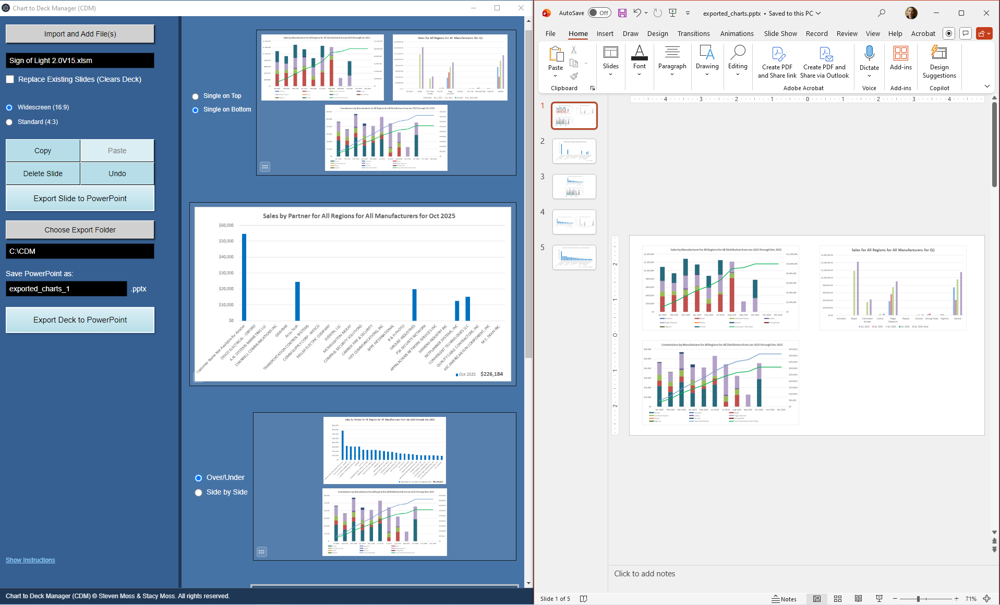

Update PowerPoint when Excel changes
The core “consulting” problem: Excel changes, the deck must update, and you don’t want to rebuild slides by hand.
CDM approach
Re-run export from the same source and CDM rebuilds the deck deterministically. Your output stays consistent across runs.

Layout controls: 1-up/2-up/4-up options designed for repeatable reporting decks.
Next
When you’re ready, replace the placeholder Store URL in assets/site.js. That updates every Store button site-wide automatically.